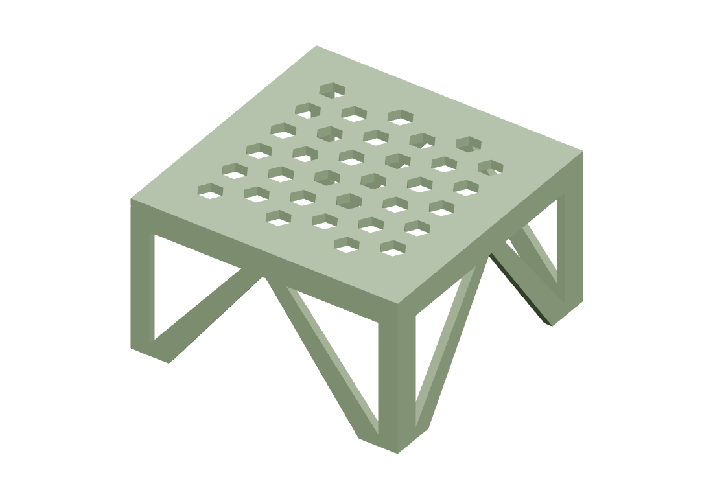

Kitchen shelf

About this print
A raised shelf for kitchen cabinet storage. Use three standard 65 mm-inner-width baskets underneath, or two existing 70 mm-inner-width baskets with one narrow 55 mm replacement. Basket handles extend in front of the shelf.